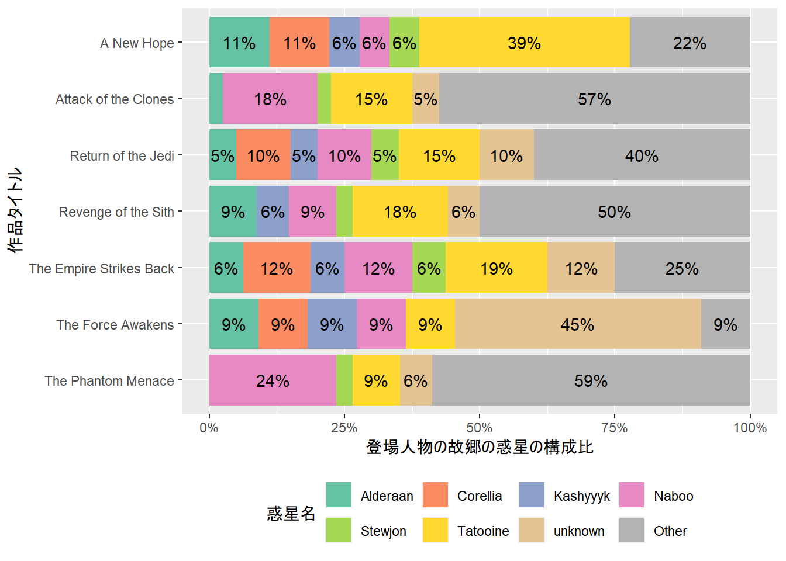
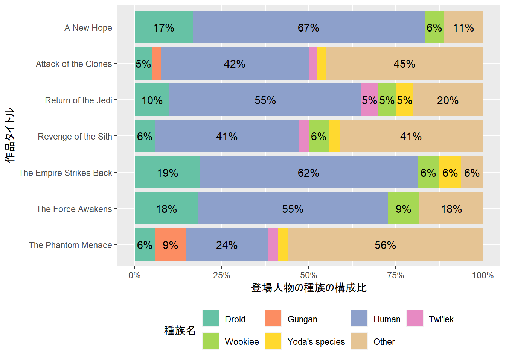

library(tidyverse)
library(dm)
library(repurrrsive)データ前処理の作業ミスをなくすために
データ分析に要する時間のうち，8割は前処理に費やされているといわれています．前処理は，その後のデータ分析の質を左右しますから非常に重要な一方で，前処理に膨大な時間を要するということは，作業ミスが起こる確率もそれだけ高くなるということを意味しています．
一般的な（データ構造に対する）前処理には，データフレームの”抽出”・”集約”・”結合”がありますが，なかでも”結合”は，コードが長くなりやすく，作業ミスが起こりやすい作業であると思われます．また，分析で必要となるデータフレームが1つにまとまっていることは稀ですから，データフレームの結合は特に頻出する処理でもあります．
データフレームの”結合”で起こりがちな典型的なミスとして，以下のようなものがあります1．
- 結合対象となるデータフレームのキーが”MECE”（「漏れなく・ダブりなく」）でない
- 結合のためのキーを取り違える，または，データ形式が異なる
もしも，これまでデータフレームの結合において，何らかの作業ミスや”ヒヤリ・ハット”を経験したことがあるのであれば，それらを放置せず何らかのパッケージに頼るほうが得策かもしれません．また，仮に作業ミスがなかったとしても，私たちは過去の作業が正しかったかについて疑心暗鬼になりがちです2．
この記事では，データフレームの”結合”における作業ミスや疑心暗鬼の解決策として有力なRのdmパッケージを紹介します．
dmによるリレーショナルデータモデル
dmの提供するリレーショナルデータモデルは，複数のデータ間の関係性を私たちの代わりに管理してくれます．
この記事では，repurrrsiveパッケージで提供されているStar Warsのデータセットを通じて，dmの提供するリレーショナルデータモデルの使い方や利点について説明します．あらかじめ，tidyverse，dm，repurrrsiveの3つのパッケージを読み込んでおきます．
repurrrsiveで提供されているStar Warsのデータセットには，以下のようなものが含まれています3．
repurrrsiveで提供されているStar Warsのデータセット
data(package = "repurrrsive") |>
chuck("results") |>
as_tibble() |>
filter(str_starts(Item, "sw_")) |>
pull(Item)[1] "sw_films" "sw_people" "sw_planets" "sw_species" "sw_starships"
[6] "sw_vehicles" 複数のデータ間の関係を扱う必要のある，以下の2つの分析事例を通じて，リレーショナルデータモデルを活用する方法を見ていきましょう．
- 基礎編：dmでリレーショナルデータモデルを構築する
- 応用編：dmでモデルを拡張したりキーを検証したりする
1. 基礎編：dmでリレーショナルデータモデルを構築する
基礎編として，Star Wars作品の登場人物の故郷の惑星の構成比を調べるためのリレーショナルデータモデルを構築してみしょう．この分析を行うために，以下のように3つのデータフレームfilms・people・planetsを準備しておきます4．ここでは，分析をシンプルにするため，必要なデータのみをselectしました5．
films <- tibble(film = sw_films) |>
unnest_wider(film) |>
select(url, title, characters)
people <- tibble(person = sw_people) |>
unnest_wider(person) |>
select(url, name, homeworld, species)
planets <- tibble(planet = sw_planets) |>
unnest_wider(planet) |>
select(url, name)filmspeopleplanets準備したデータフレームを確認すると，各データフレームのurl列がキーとして用いられていることがわかりますので，データフレーム間の関係は以下の図のようにまとめることができます6．特に，1つの映画作品には複数の登場人物が登場することが一般的ですので，filmsのcharacters列が登場人物のリストになっていることに注意が必要です．そのため，このままでは，filmsのcharacters列をpeopleのurl列と対応付けることができません．
flowchart TB
films.characters --> people.url
people.homeworld --> planets.url
subgraph films
films.url[url]
films.title[title]
films.characters[List of characters]
end
subgraph people
people.url[url]
people.name[name]
people.homeworld[homeworld]
end
subgraph planets
planets.url[url]
planets.name[name]
end
そこで，filmsとpeopleの関係，すなわち，どの作品にどの登場人物が登場するかを表すデータfilms_x_charactersを新たに作成することを考えます7．films_x_charactersを介すことで，データ間の関係を以下の図のようにまとめることができます．
flowchart TB
films_x_characters.url --> films.url
films_x_characters.characters ---> people.url
people.homeworld --> planets.url
subgraph films_x_characters
films_x_characters.url[url]
films_x_characters.characters[characters]
end
subgraph films
films.url[url]
films.title[title]
end
subgraph people
people.url[url]
people.name[name]
people.homeworld[homeworld]
end
subgraph planets
planets.url[url]
planets.name[name]
end
それでは，上のイメージに従って，実際にリレーショナルデータモデルを構築してみましょう．まず，filmsのurl・characters列を使ってfilms_x_charactersを作成します．ついでにfilmsから不要となったcharacters列を削除しておきます．
# Create films_x_characters and remove characters column from films
films_x_characters <- films |>
select(url, characters) |>
unnest_longer(characters)
films <- films |>
select(!characters)
films_x_characters最後に，dm()に準備したfilms・people・planets・films_x_charactersを渡した後，主キー（primary keys）と外部キー（foreign keys）を追加することで，リレーショナルデータモデルを構築することができます．
dmでは，主キーをdm_add_pk()で8，外部キーをdm_add_fk()で設定します9．
dm_starwars_1 <- dm(films, people, planets, films_x_characters) |>
# 1. Add primary keys
dm_add_pk(films, url) |>
dm_add_pk(people, url) |>
dm_add_pk(planets, url) |>
dm_add_pk(films_x_characters, c(url, characters)) |>
# 2. Add foreign keys
dm_add_fk(films_x_characters, url, films) |>
dm_add_fk(films_x_characters, characters, people) |>
dm_add_fk(people, homeworld, planets)
dm_starwars_1── Metadata ────────────────────────────────────────────────────────────────────
Tables: `films`, `people`, `planets`, `films_x_characters`
Columns: 10
Primary keys: 4
Foreign keys: 3dm_draw()を用いて，リレーショナルデータモデルを描画することもできます．描画してみると，上のイメージと同様の関係が構築されていることがわかります．
dm_draw(dm_starwars_1)以下のようにdm_flatten_to_tbl()を用いることで，films_x_charactersデータにfilms・people・planetsデータを結合したデータフレームを作成することができます10．この際，異なるデータ間で同名の列名が存在する場合には，データ名に応じて自動的に列名が変更されます．このように，リレーショナルデータモデルが私たちの代わりにデータ間の関係を管理してくれるおかげで，他のデータ間との関係に基づいて自動的にデータフレームを結合することができます．
data_films_x_characters_1 <- dm_starwars_1 |>
dm_flatten_to_tbl(films_x_characters,
.recursive = TRUE) Renaming ambiguous columns: %>%
dm_rename(people, name.people = name) %>%
dm_rename(planets, name.planets = name)data_films_x_characters_1作成したdata_films_x_characters_1を使うことで，以下のように，登場人物の故郷の惑星の構成比をグラフにすることができます． このグラフへの考察はひとまず措くとして，リレーショナルデータモデルを用いることでデータフレームの結合を自動化できることが確認できました．
しかし，上のような分析であれば，left_join()を用いてデータフレームを結合することも簡単で， あまりリレーショナルデータモデルを用いるメリットが感じられないかもしれません． そこで応用編では，リレーショナルデータモデルが本領を発揮する，より込み入った状況を考えてみます．
登場人物の故郷の惑星の構成比のグラフ
data_films_x_characters_1 |>
mutate(name.planets = fct_lump_n(name.planets, 7,
ties.method = "first") |>
fct_relevel("Other",
after = Inf)) |>
count(title, name.planets) |>
mutate(prop = n / sum(n),
.by = title,
.keep = "unused") |>
ggplot(aes(fct_rev(title), prop,
fill = name.planets)) +
geom_col(position = position_stack(reverse = TRUE)) +
geom_text(aes(label = if_else(prop < 5e-2,
"",
scales::label_percent(accuracy = 1)(prop))),
position = position_stack(vjust = 0.5,
reverse = TRUE)) +
scale_x_discrete("作品タイトル") +
scale_y_continuous("登場人物の故郷の惑星の構成比",
labels = scales::percent) +
scale_fill_brewer("惑星名",
palette = "Set2") +
coord_flip() +
theme(legend.position = "bottom") +
guides(fill = guide_legend(nrow = 2,
byrow = TRUE))
2. 応用編：dmでモデルを拡張したりキーを検証したりする
応用編では，Star Wars作品の登場人物の種族の構成比を調べてみます． この分析の難易度は基礎編とさほど変わりませんが，通常，扱うデータが増えるとコードが煩雑化しやすいため，リレーショナルデータモデルを使うメリットが大きくなります． さらに，リレーショナルデータモデルのメリットには，以下のようなものもあります．
- 既存のリレーショナルデータモデルに新たなデータを追加することが可能
- 結合のためのキーの整合性を確認することが可能
あらかじめ，この分析で必要となるspeciesデータを準備しておきます．
species <- tibble(species = sw_species) |>
unnest_wider(species) |>
select(url, name)
speciesdmでは，dm()を用いて，リレーショナルデータモデルに新たにデータを追加することができます． ここでは，dm_starwars_1にspeciesデータを追加して，dm_starwars_2を作成してみましょう． dm_draw()を用いることで，モデルが更新されたことがわかります．
dm_starwars_2 <- dm_starwars_1 |>
dm(species) |>
dm_add_pk(species, url) |>
dm_add_fk(people, species, species)
dm_draw(dm_starwars_2)次に，結合のためのキーの整合性を確認してみましょう．こうした検証は，dm_examine_constraints()を用いることで可能です． ここでは，上でありがちなミスとして挙げた，2種類のミスを含んだモデルを作成して，dm_examine_constraints()の挙動を確認してみましょう． ここで，dm_starwars_2_wrong_dataは，speciesデータの1行目が削除されたデータで，データがMECE（「漏れなく・ダブりなく」）でないものです． また，dm_starwars_2_wrong_pkは，speciesデータの主キーを取り違えたものです．
dm_starwars_2_wrong_data <- dm_starwars_1 |>
dm(species = species |>
slice(-1)) |>
dm_add_pk(species, url) |>
dm_add_fk(people, species, species)
dm_starwars_2_wrong_pk <- dm_starwars_1 |>
dm(species) |>
dm_add_pk(species, name) |>
dm_add_fk(people, species, species)dm_examine_constraints()の結果を見てみましょう． 正しいモデルであるdm_starwars_2では，ℹ All constraints satisfied.というメッセージが表示され，モデルのキーが整合していることがわかります． 一方で，dm_starwars_2_wrong_dataとdm_starwars_2_wrong_pkでは，! Unsatisfied constraints:というメッセージが表示されています． これは，speciesデータの主キーに含まれるはずのデータが含まれていないことに起因します． このように，dm_examine_constraints()を用いることで，簡単にモデルのキーの整合性を確認することができます．
print(dm_examine_constraints(dm_starwars_2))ℹ All constraints satisfied.print(dm_examine_constraints(dm_starwars_2_wrong_data))! Unsatisfied constraints:• Table `people`: foreign key `species` into table `species`: values of `people$species` not in `species$url`: http://swapi.co/api/species/5/ (1)print(dm_examine_constraints(dm_starwars_2_wrong_pk))! Unsatisfied constraints:• Table `people`: foreign key `species` into table `species`: values of `people$species` not in `species$name`: http://swapi.co/api/species/1/ (35), http://swapi.co/api/species/2/ (5), http://swapi.co/api/species/12/ (3), http://swapi.co/api/species/15/ (2), http://swapi.co/api/species/22/ (2), …以上のように，dm()でリレーショナルデータモデルに新たなデータを追加したり，dm_examine_constraints()で結合のためのキーの整合性を確認したりすることができることがわかりました． 最後に，作成したリレーショナルデータモデルdm_starwars_2を用いて，Star Wars作品の登場人物の種族の構成比をグラフ化したものが以下の図です．ここでも，考察は割愛します．
登場人物の種族の構成比のグラフ
dm_starwars_2 |>
dm_flatten_to_tbl(films_x_characters,
.recursive = TRUE) |>
mutate(name.species = name.species |>
fct_na_value_to_level("Other") |>
fct_lump_n(7,
ties.method = "first") |>
fct_relevel("Other",
after = Inf)) |>
count(title, name.species) |>
mutate(prop = n / sum(n),
.by = title,
.keep = "unused") |>
ggplot(aes(fct_rev(title), prop,
fill = name.species)) +
geom_col(position = position_stack(reverse = TRUE)) +
geom_text(aes(label = if_else(prop < 5e-2,
"",
scales::label_percent(accuracy = 1)(prop))),
position = position_stack(vjust = 0.5,
reverse = TRUE)) +
scale_x_discrete("作品タイトル") +
scale_y_continuous("登場人物の種族の構成比",
labels = scales::percent) +
scale_fill_brewer("種族名",
palette = "Set2") +
coord_flip() +
theme(legend.position = "bottom") +
guides(fill = guide_legend(nrow = 2,
byrow = TRUE))
まとめ
この記事では，dmを使ってリレーショナルデータモデルを構築する方法を紹介しました． dmを使って，ひとたびリレーショナルデータモデルを構築してしまえば， データ間の関係を自ら管理する必要がなくなり，dm_flatten_to_tbl()でデータの結合を自動的に行うことができます． それ以外にも，dmでは，dm()によるモデル拡張やdm_examine_constraints()結合のためのキーの整合性の確認など， データ前処理の質を高めるための便利な機能が提供されています．
参考文献
- dmパッケージのサイト
- 前処理大全［データ分析のためのSQL/R/Python実践テクニック］
- starwarsdb
- Star WarsのリレーショナルデータモデルがCRANからダウンロードできます
脚注
幸いなことに，最近のdplyrでは，結合先のデータの”ダブり”に対して警告が出るようになりました．↩︎
その作業を行ったのが過去の自分であっても他の誰かであっても，完全に作業が正しかったという自信は持てないものです．↩︎
repurrrsiveのエクスポートするデータのうち，名前が
sw_で始まるデータがStar Warsに関するもので，sw_以降の部分がデータの内容を表しています．↩︎ここでは，
sw_peopleのspecies列は不要ですが，次の分析で使用するため選択しておきます．↩︎ここでは，データフレーム間の関係を図示するために，mermaidを使用しました．↩︎
作品と登場人物には，明確な上下関係はありませんので，
characters_x_filmsという名称でも構いません．↩︎films・people・planetsについては，url列が主キーとなり，films_x_charactersについては，url・characters列の2列の組合せが主キーとなります．↩︎上のイメージの矢印に従って，
films_x_charactersのurl・characters列を，それぞれfilms・peopleのurl列に対応付けます．さらに，peopleのhomeworld列をplanetsのurl列に対応付けます．↩︎dmでは，各データを”テーブル”と呼びます．↩︎